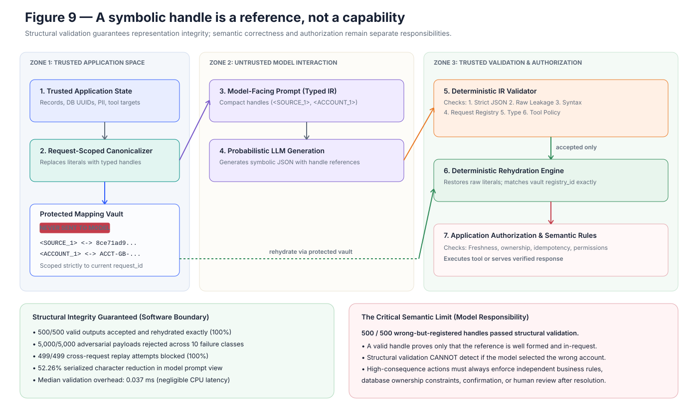

System rule
Keep a literal surface value in context only when its exact content is needed. Otherwise expose a compact request-local typed handle, validate the symbolic response, and resolve it only in trusted software.
A request-scoped canonicalizer, protected mapping vault, strict validator, and same-request rehydrator turn the empirical findings into a testable software boundary—then expose the exact semantic error that boundary cannot catch.
Decision. The research and reference-implementation gate passes. Structural integrity is enforceable without fine-tuning; factual correctness, ownership, freshness, and authorization remain application responsibilities.
Stages 1–8 separate transport cost, source binding, answer quality, internal representation, causal use, and raw-value exposure. Stage 09 asks how much of the interface can be moved out of probabilistic generation and enforced in trusted code.
Keep a literal surface value in context only when its exact content is needed. Otherwise expose a compact request-local typed handle, validate the symbolic response, and resolve it only in trusted software.
If malformed, unregistered, mistyped, leaked, replayed, or unauthorized values can cross the boundary—or accepted values cannot round-trip exactly—the reference design fails.
The reference implementation is not integrated with a real identity system, retriever, database, or tool executor. The mapping vault is an interface, not an encryption or access-control implementation.
The application schema determines which fields are canonicalized. The model receives a typed ModelIR; raw values stay in a separate redacted MappingVault. The response is accepted only after JSON shape, leakage, registry membership, handle type, and action-policy validation.
Use trusted application schema to detect fields.
Create typed request-scoped handles and retain literals in the vault.
Give the model only the typed view and request strict symbolic JSON.
Check schema, leakage, registry, types, tools, and action counts.
Resolve accepted same-request references, then authorize separately.
500 requests · 10,000 records
Each synthetic request contained 20 banking/database records. The test checked deterministic canonicalization, raw-value absence from model and audit payloads, strict acceptance, and exact rehydration.
5,000 payloads
Unknown and malformed handles, type-confused answers, raw protected answers, schema extensions, unauthorized actions, invalid argument schemas, tool-argument type confusion, action-count violations, and duplicate references were each tested 500 times. Cross-request replays formed a separate 499-attempt check.
500 payloads
Every response used a well-formed handle registered to the current request but pointing to the wrong existing account. This probes the line between representational validity and semantic correctness.
accepted and exactly rehydrated
malformed, leaked, mistyped, or unauthorized
canonical model view vs raw state + instruction
| Check | Result | What it establishes |
|---|---|---|
| Valid outputs accepted and exactly rehydrated | 500 / 500 | Lossless happy-path mapping |
| Model payloads without configured raw values | 500 / 500 | Literal separation before generation |
| Audit records without configured raw values | 500 / 500 | Redacted reference audit path |
| Deterministic canonicalization replays | 500 / 500 | Stable same-request representation |
| Cross-request rehydration blocked | 499 / 499 | Registry identity isolation |
| Ten adversarial failure classes rejected | 5,000 / 5,000 | Structural and policy enforcement |
| Wrong-but-registered handles rejected | 0 / 500 | Structural validation cannot prove factual target choice |

Median canonicalization took 3.51 ms and median validation 0.037 ms on the evaluation host. The canonical model view contained 2,886,213 serialized characters versus 6,045,938 for raw state and instruction. No tokenizer measurement was made, so this is not a token-reduction claim.
A deterministic layer can enforce response shape, prevent configured literal leakage, reject fabricated or cross-request references, check handle types, constrain tool schemas, and perform exact same-request resolution.
Unknown or malformed handle: the validator can reject it. Known but semantically wrong handle: task verification, a business rule, user confirmation, an independent model, or human review must catch it.
Handles are references—not bearer tokens, permissions, ownership proofs, or guarantees that the model chose the correct object. Rehydration therefore precedes, but never replaces, identity, authorization, freshness, range, idempotency, and business-rule checks.
Use compact handles for database IDs, UUIDs, URLs, tool-call IDs, transactions, emails, or accounts when their spelling is irrelevant and trusted software can retain a reversible request-local map.
Preserve literals when characters carry meaning: comparing URL paths, classifying email domains, validating checksums, editing code, quoting text, or reasoning about spelling and substrings.
The map is sensitive state. Production needs encryption, tenant/request binding, access controls, short retention, redacted traces, lifecycle handling, and ordinary data governance.
Canonicalization does not neutralize prompt injection, guarantee complete detection, prevent re-identification from surrounding facts, or make retrieved content trustworthy.
Real deployments still need integration with identity and authorization systems, concurrency-safe mapping lifecycles, retry/idempotency behavior, observability, retention controls, and risk-tiered semantic verification.
FINDINGS_STAGE9.mdsrc/symbolic_ir/ir/experiments/09_system_ir.pyscripts/evaluate_stage9_system.pytests/test_system_ir.pyresults/processed/stage9_system_eval.json21ef9484a2dbcadf52c186dbfbdf0d950af93576fec8deaf78a19660a4d3abf4.venv/bin/python experiments/09_system_ir.py --requests 500 --records-per-request 20, followed by .venv/bin/python scripts/run_tests.py. The findings report records 43 tests for the current reference suite.